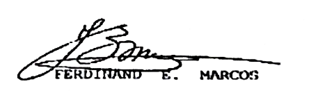

REVERSE KEY PROGRAM
ANG TANGING LUNAS SA KAHIRAPAN NG MUNDO. MARAMI RING MGA BANSA ANG UMAASA AT NAGHAHANAP NITO. ANG NAKAKAUNAWA NITO AY NASA PILIPINAS. SIYA LAMANG ANG MAY KARAPATAN, ANG NAG-IISA NA MAKAKAUNAWA KAHIT NA BALIGTARIN ANG DOKUMENTO. SIYA ANG SUSI SA KAPAYAPAAN, KASAGANAAN, AT KATARUNGAN PARA SA EKONOMIYA NG PILIPINAS AT NG BUONG MUNDO. KONEKTADO ITO SA ISANG FOUNDATION NA IBINIGAY SA ISANG MALAKING ORGANISASYON. NGAYON NA ANG PANAHON, INAANYAYAHAN KA NAMING MAGPAKITA AT SAMA-SAMA TAYONG MAGKAKAROON NG PINAKAMALAKING PAGBABAGO.


Republic of the Philippines
Office of the President
Malacanang Palace, Manila
FROM : PANGINOON NG MGA PANGINOON
TO : MGA PINAGPALANG PINILING IILAN (LEADERS, FATHERS, ELDERS)
RE : NAPAKAGANDANG OBRANG MASINGHUSAY (BRILLIANT MASTERPIECE)
ANG AKING PANANAMPALATAYANG LUMALABAN
(ANG AKING DIYOS AT ANG AKING BAYAN)
ANG PAMANA NG NAWALANG SALAPI AT GINTO
MGA NAPAKAGANDANG PAHIWATIG TUNGKOL SA YAMAN NG MUNDO
ANG MGA PAHIWATIG NA ITO AY "ANG BAYANG ITO AY MULING MAGIGING DAKILA.". IYON AY ISANG AKMANG PAGLALARAWAN SA KOMPLEKSIDAD NG PAGLUTAS NG MGA SULIRANIN, KUNG SAAN ANG MALAKAS NA TAO ANG SIYANG TAGAPAGBUO, NAGLALAAN NG BUONG PANAHON AT PANINIWALA PARA MATUPAD ANG PILIPINAS 2000 AT LAMPAS PA, PATUNGO SA PAGPAPATUPAD NG PANGARAP, MISYON AT PANANAW GAMIT ANG YAMAN NG MAYLIKHA PARA SA MGA PILIPINO, SA PILIPINAS, AT SA BUONG MUNDO. ANG MGA PAHIWATIG, MAGANDA SA KANYANG ANYO, AT SIYA AY MAY KAKAYAHANG LUMUTAS NITO; HINDI NA NIYA KAILANGANG MABAHALA SA MADILIM NA PRAKTIKAL AT ESPIRITUWAL NA HAMON NG PAGTALO SA MGA KALABAN NA NAKAHANDA NANG SUMAKOP AT AGAWIN ANG PRIBADONG YAMAN NG ANGKAN NG MAHARLIKA. SA GAYON, ANG YAMAN NG MASAMA AY MAPUPUNTA SA MGA MATUWID..
KAPAG SINIMULAN MO ITO NANG TAMA, MATATAPOS MO ITO NANG TAMA, AT MAIPIPILIT MO ANG CHECKMATE SA MGA SUMUSUNOD NA GALAW. KAPAG NATAGPUAN MO ANG TAMANG TAO, SA TAMANG PANAHON, SA TAMANG LUGAR, AT MAY TAMANG LAYUNIN, KILALA ITO BILANG "SUSI," ANG LAHAT NG IBA AY KUSANG SUSUNOD, SA PAMAMAGITAN NG ESPIRITUWAL NA PANGHIHIMASOK NG ALPHA AT OMEGA. BILANG GABAY NA GINTONG BATAS, ANG KANILANG UNANG GALAW AY DAPAT NA NAKAPALOOB SA KONTEKSTO NG BANAL NA KASULATAN NA TINATAWAG NA BIBLE CODE. ANG MGA NAKA-BLACKLIST NA "POLITIKAL AT RELIHIYOSONG ROBOT NA PINAKAMASASAMANG PILIPINO" AY SUSUBUKAN ANG IBA'T IBANG PARAAN PARA IWASAN ANG CHECKMATE NA ITO, NGUNIT SA BANDANG HULI, SILA AY MAGIGING BIKTIMA NG SARILING MGA GALAW. SINO BA ANG GUSTONG MATALO?!!!
ANG "SUSI" AY BIBIHIRANG NAKAUGNAY SA PERA AT LALO NA SA "PAGGAWA NG PERA SA MGA MAPANDAYANG NEGOSYO," NA SIYANG UGAT NG LAHAT NG KASAMAAN. GAYUNPAMAN, ANG ISA O DALAWA SA MGA SUMUSUNOD NA PROBLEMA AY MAAARING MAGSIMULA SA MGA PARAANG ITO, KAYA DAPAT PALAGING HANDA SA MGA HINDI INAASAHANG PAGKAKAMALI SA PAGBUO NG PROBLEMA. ANG MGA GABAY NA PRINSIPYO NG MGA MAHALAGANG MANLALARO AY DAPAT MAGING MAINGAT SA PAGTATAGO NG IMPORMASYON, PAG-IWAS SA PAGSASANTABI, AT PAG-IWAS SA MGA SOLISITASYON. ANG PANGALAN NG LARO AY PINAKAMATAAS NA LIHIM AT MAINGAT NA MGA PAGKILOS.
ANG MGA PAGKAKAMALI AY ISANG MALUBHANG DEPEKTO SA SINING, "ANG DIGMAAN AY NAPAPANALO SA PAMAMAGITAN NG MGA PAGKAKAMALI NITO," NGUNIT KASAMA SILA RITO UPANG DAGDAGAN ANG ALIW NG MGA SORPRESA SA KANILANG PAGHAHANAP NG IISA AT TANGING SOLUSYON, ANG BANAL NA NUMERO 777.
SA LIHIM NA AKLAT NG KATUBUSAN, SA MATA NG MGA PRAKTIKAL NA MANLALARO, ANG KARAMIHAN SA MGA SITWASYONAL NA PROBLEMA AY MUKHANG KAKAIBA DAHIL HINDI ITO MADALAS MANGYARI SA PRAKTIKAL NA LARO. NGUNIT HINDI IYAN LUBOS NA TOTOO, SAPAGKAT MAY MALAKING KASIYAHAN PA RIN ANG MAKUKUHA SA PAGTANGKANG LUTASIN ANG PROBLEMANG ITO, NA NAGBIBIGAY SA IYO NG BUONG ESPIRITUWAL NA PANANAW, ANG MALALIM NA PAG-UNAWA SA TALINO NG MGA PILIPINO, AT IPINAPAKITA KUNG ANO ANG MAGANDANG EPEKTO NA MAAARING MABUO MULA SA LAKAS NG PULITIKAL NA EKONOMIYA AT SA PINAKA-MABISANG PAGPAPAMALAS NG BITUING PANG-UMAGA, PATUNGO SA BANAL NA PAMAHALAAN(DIVINE GOVERNMENT) NA PINANGUNGUNAHAN NG PINILING ILANG PILIPINO(CHOSEN FEW PILIPINO) AT IBANG MGA TAO NA PINAHIRAN AT INIHALAL NG DIYOS(APPOINTED BY GOD) AT HINDI NG TAO(NOT OF MEN).
GINAYA MULA SA MGA LARO NG MGA HARI AT REYNA, DAPAT SILANG GABAYAN NG MGA HYPOTHESIS NA ITO. NAKAPAGTATAKA PARA SA TAO NA MALAMAN, UPANG MALAMAN NIYA KUNG GAANO KARAMI ANG ALAM NIYA, NGUNIT GAANO KAUNTI ANG KANYANG ALAM. PALAYAIN NATIN ANG ATING MGA SARILI SA MALING PANINIWALA NA MAY LIMANG PANDAMA LAMANG TAYO; ANG KATOTOHANAN AY IPINAGKALOOB SA ATIN NG DIYOS ANG PITONG PANDAMA (COMMON SENCE AT SPIRITUAL SENSE) NA DAPAT NATING PAGYAMANIN, PINUHIN, SURIIN, AT LINANGIN PARA SA KAPAKANAN NIYA NA LUMIKHA SA ATIN.
PINAGKALOOBAN NG NAPAKALAKING ESPIRITUWAL NA KAPANGYARIHAN AT KAMANGHA-MANGHANG KAALAMAN MULA SA MAKAPANGYARIHANG DIYOS, NAGSISIKAP ANG MAKABAGONG TAO(MODERN MEN) PARA SA KATUBUSAN NG SANGKATAUHAN MULA SA PANG-AALIPIN NG KAMANGMANGAN, KAHIRAPAN, KAWALAN NG PAG-ASA, KAWALAN NG KATARUNGAN, PANG-AAPI, PAGSAMANTALA, TIRANIYA, KAMATAYAN, AT KAHINAAN NG TAO.
KAYA SUMISINAG MULA SA HORIZON NG SILANGAN, MALIWANAG NA NAGPAPAKITA NG KAKAYAHAN NG PAGPAPARANGAL SA LAHING MAHARLIKA, NA TUNAY NA NAGMULA SA HASHEMITE EMPIRE NG HARING DAVID HANGGANG SA SAMPUNG DATUS NG ASIA MENOR, NA NAKATIRA SA LUPANG PINANGAKO; KASAMA ANG 7101 EMERALD ISLE NA MAGTATAPOS SA PAGDURUSA, GUTOM, AT UHAW NG TAO. SA WAKAS, ANG 777 MORNING STAR(MESSIAH-KING) AY MAGPAPATULOY SA PAGLIWANAG AT MAGSISILBING TANGGULAN NG PAG-ASA, KATUBUSAN AT HANGGANG SA HULI, ANG PAGKAKASAKATUPARAN NG BAGONG JERUSALEM BILANG PAGTUPAD NG BANAL NA PLANO NG DIYOS NA MANGUNGUNA SA WALANG HANGGANG KAPAYAPAAN, PAGKAKAISA, PAGKAKATIWALA, PAGKAKAISA, AT MASAGANANG BUHAY PARA SA LAHAT NG MAGTATAGUMPAY. AT ANG MGA SAKRIPISYO NG MGA MAHALAGANG BUHAY AT BANAL NA DUGO NG ATING MGA NINUNO, MGA BAYANI, AT MGA KABABAYAN AY HINDI MAWAWALAN NG SAYSAY.
PARA SA MGA NALIWANAGAN NA, AKTIBO, AT SUMUSUPORTA NA MAGMAMANA NG MALALAKING YAMAN NA WALANG PAG-AALINLANGAN NA NAG-ALAY NG KANILANG ORAS, PERA, KAALAMAN, AT PAGPUPUNYAG PARA MAISA-ISANG TANGKILIKIN ANG MGA PIRA-PIRASO NA PANGYAYARI SA PANGALAN NG MAKAPANGYARIHANG DIYOS. LALO NA SA TAGAPAMUNO, NA NAG-ORKESTRA NG LAHAT NG ITO PARA SA SEGURIDAD, MALIKHAING NAGSISIGURADO NA ANG MAGTATAGUMPAY AY MAKAKAMIT ANG LAHAT KAHIT PA NAKIKITA KANG MALIIT NGUNIT TUMATAYO NAMANG MATATAG. NAGSISILBI KAMING MAGPASALAMAT AT MAGHANDOG NG AMING TAOS-PUSONG PASASALAMAT AT MALALIM NA PAGKAPASALAMAT SA LAHAT SA INYO. MABUHAY!!!
LAHAT NG PAPURI, PASASALAMAT, KALUWALHATIAN, AT KARANGALAN AY SA IYO, MAKAPANGYARIHANG AMA. ALLELUYAH, ALLELUYAH, ALLELUYAH, NAWAY MAGANAP NA. MAGSAMA-SAMA TAYO SA ILALIM NG IISANG DIYOS, IISANG BAYAN, AT IISANG BANSA!
